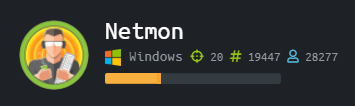
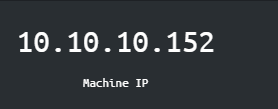

Netmon Writeup

Who am I?
Netmon is rated as a medium machine 
NMAP result

From the NMAP result we see port 8080 which is HTTP we can see Apache Tomcat which is a webserver first thing to do is to try accessing it on the web browser 10.10.10.95:8080. We do get a website, it seens to be a default Apache webserver
FTP
We tried to login with no credentials

Then we tried with Anonymous as userlogin

WE got in

We can see there is a Users directory we tried to go ther, we got stopped at the admin directory

Since the Administrator directory goes no where We take a look at the Public directory

We found our first flag in user.txt We can download the user.txt and open it on our own machine


WE investigate futher, usin ls -la we can see hidden files aswell


We see the directory paessler to see whats inside, we gidt some old configuration files we can download the paessler folder to our machine

We downloaded all the configuration files

We can now try to grep for "password" or username "prtgadmin" which we know is the netmon defautlt

Something fishy in the .old.bak, we need to look into that. We opend the file in a text editor and search for "password"

PrTg@dmin2018 PrTg@dmin2019 PrTg@dmin2021

But still error, we tried with different year PrTg@dmin2019, seem to work

WE did some digging around and read som write ups and found a cve for it CVE-2018-9276 (https://0xrick.github.io/hack-the-box/netmon/ ) We created a script that creates a new admin user, in order to do that we needed some few things we need cookies for our session from burpsuit

we copied the scrip from (https://www.exploit-db.com/exploits/46527) and made a bash script with our credentials and called it exploite1.sh

The bash scripe creadted a new admin user

We then tried to escalate using the new user and password


we then went to the c root (cd ..) and found our flag

3018977fb944bf1878f75b879fba67cc
Conclusion